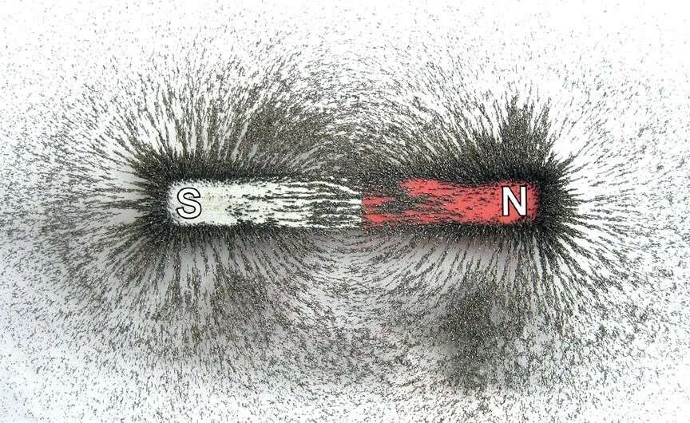
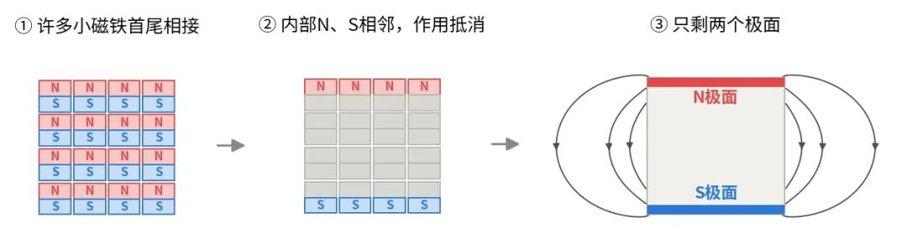
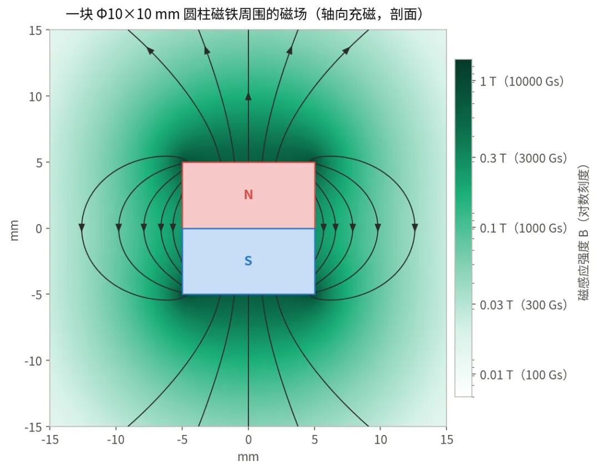
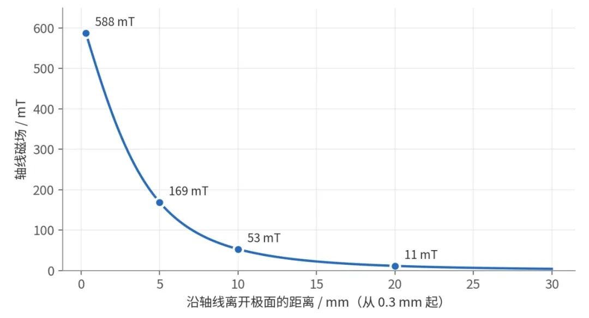
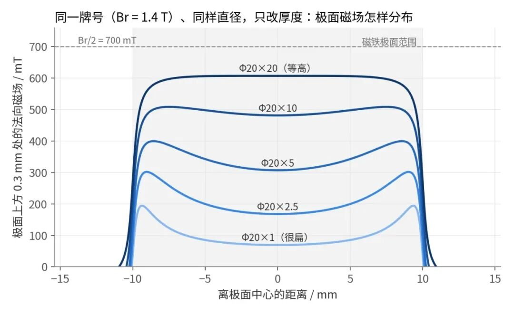
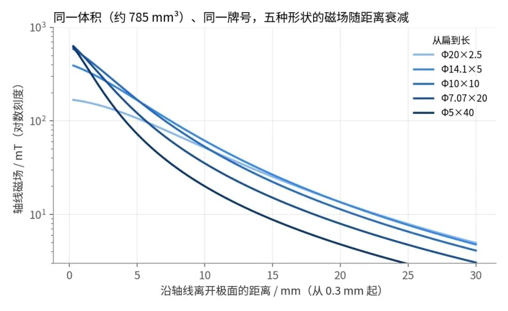
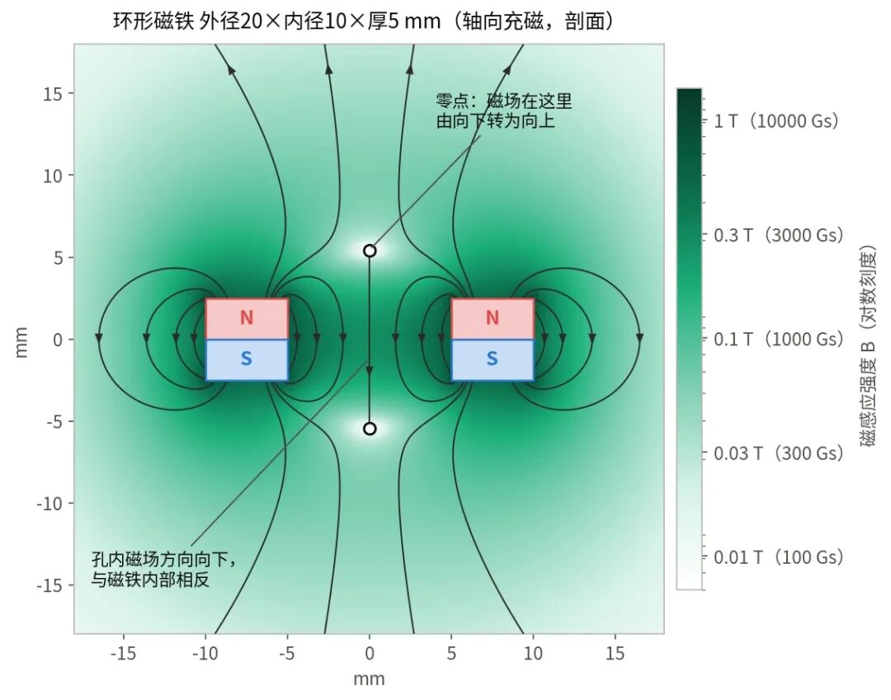
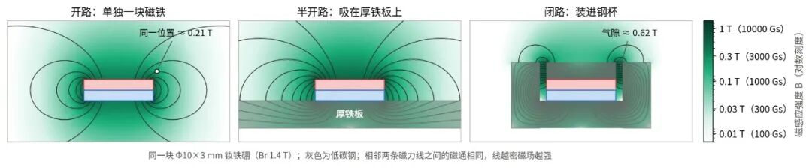

一块磁铁周围的磁场，究竟是什么样子的？
首发于公众号「磁荟」 · 查看原文
把一块磁铁放在白纸下面，撒上铁粉，轻敲纸面，铁粉就会排成一条条弧线，从一极绕向另一极。这张图很多人在中学课本里都见过，它给了我们对磁铁周围磁场最直观的印象。

【图1】用铁粉演示磁铁周围的磁场分布
仔细看会发现，铁粉的分布并不均匀：磁铁两端堆得最密，侧面正中间却很稀疏。同一块磁铁，同一种材料，为什么两端强、中间弱？
铁粉图只画出了磁场的大致轮廓，哪里强、哪里弱、强弱相差多少，它回答不了。要看清一块磁铁周围的磁场究竟是什么样子，得先弄清磁场从哪里来。
一、磁场从两个极面”长”出来
可以把一块磁铁想象成由许多小磁铁排列而成：每个小磁铁都有自己的N极和S极，一个挨一个，首尾相接。在内部，前一个小磁铁的N极紧挨着后一个的S极，作用相互抵消，只有两端没有相邻磁极与它们配对，于是对外表现为两个极面。这就是电磁学中常用的“等效磁极模型”。

【图2】等效磁极模型示意
只看磁铁外部，可以把磁场理解成从N极面“出来”，绕过外部空间，再回到S极面。磁铁外部任意一点的磁场，都是两个极面共同作用的结果。一般来说，离某个极面越近，它的影响越明显；但两个极面的作用还要看方向——有些位置会互相削弱，有些位置则会同向叠加。
回头看图1的铁粉。磁铁的每一端是一个极面，另一个极面远在另一头，几乎削弱不到这里，所以两端的铁粉都堆得最密；侧面正中间离两个极面都远，铁粉就稀稀落落。
差距有多大？按计算，一根Φ5×40mm的钕铁硼圆柱，极面上方的磁场约为0.6 T，侧面正中间只有约0.01 T，相差五十多倍。
图3是用这个模型算出的Φ10×10mm钕铁硼圆柱磁铁周围的磁场。磁力线在磁铁外部从N极绕回S极，在内部再回到N极，首尾闭合。

【图3】一块Φ10×10mm钕铁硼圆柱磁铁周围的磁场
二、为什么同一块磁铁周围，有些地方强，有些地方弱？
**离得越远越弱，而且弱得很快。**以图3的钕铁硼圆柱磁铁为例，沿中心轴，极面上方0.3mm处的磁场约为588 mT；离开5mm，约为169 mT；离开10mm，也就是一个直径的距离，只剩大约53 mT，不到极面附近的十分之一；离开20mm，磁场只剩约11 mT。

【图4】Φ10×10mm钕铁硼圆柱磁铁轴线上的磁场随距离衰减
原因在于，从远处看，N极面和S极面几乎挤在一起：两者之间隔着的那点厚度，比起到磁铁的距离已经微不足道，方向相反的作用也就大部分互相抵掉了。在足够远的地方，距离每增加一倍，磁场就降到原来的约八分之一。拿磁铁靠近铁块时，起初几乎没有感觉，直到最后一小段才”啪”地吸上去，磁场随距离急剧衰减是原因之一。
**贴近表面时，薄片边缘比中心强。**这和很多人的直觉相反，一般会以为极面正中心最强。图5计算了五片直径都是20mm、厚度从1mm到20mm的钕铁硼圆片，在极面上方0.3mm处的法向磁场。最厚的那片，极面各处的磁场差不多，约为0.6 T；越薄，中间塌得越厉害。1mm厚的圆片，中心磁场只有约70 mT，靠近边缘处，磁场约为190 mT，是中心的近3倍。

【图5】相同直径不同厚度的钕铁硼圆片，极面上方0.3mm处的法向磁场分布
原因还是两个极面靠得太近。薄片的S极面就在N极面背后1mm处，极面中心正对着它，削弱最多；越往边缘，受到的削弱越少。方块磁铁也是这样，20×20×2mm的方块磁铁，极面中心磁场约为0.12 T，四个角附近约0.3 T。“极面中心磁场最强”并不是普遍规律，磁铁越薄，边缘效应越明显。
图5还能看出一个上限：磁铁越厚，极面中心越强，但再厚也只能接近Br的一半（图中虚线，Br为1.4 T时约0.7 T）。圆柱、方块这类平极面磁铁都是如此。
也正因为分布不均，同一块磁铁，高斯计探头放在中心还是边缘、感应元件离表面多远，读数都会不一样，在极面附近尤其明显。用表磁做为检验指标时，需要把测量位置和测量方式一起约定清楚。
三、换一种形状或充磁方式，磁场分布也会改变
**表面强，离远了不一定强。**既然越长表面磁场越高，把磁铁做得细长是不是更好？图6比较了五片体积相同（约785mm³）的钕铁硼圆柱磁铁，从Φ20×2.5的扁平薄片到Φ5×40的细长圆柱。在极面上方0.3mm处的法向磁场，细长圆柱约为0.62 T，薄片只有约0.17 T；离开10mm，顺序反了过来：薄片约为52 mT，细长圆柱约20 mT。
细长圆柱的磁场集中在极面附近，一离开就很快衰减；薄片表面不强，但衰减得慢。不过再往远处走，形状的影响会逐渐减小。

【图6】同体积不同形状的钕铁硼圆柱，轴线磁场随距离衰减
**环形磁铁的孔内，会出现反向磁场。**图7是一个外径20mm、内径10mm、厚5mm的环形钕铁硼磁铁。从N极面内圈出来的磁力线，有一部分就近穿过内孔回到S极面，所以孔里的磁场自上而下，与磁铁内部的方向相反，在孔的正中心（环的半高处）约0.29 T。
沿中心轴往上走，在离极面约3mm处，磁场降为零；越过这一点，方向才转为向上，但强度已经弱得多。用环形磁铁配合霍尔传感器时，如果传感器恰好放在这个零点附近，读到的信号会接近零。

【图7】环形磁铁的磁场：孔内反向与轴线上的零点
**充磁方向决定了磁极落在哪里。**以上讨论的都是轴向充磁，N、S极分别在两个端面。同一个圆环，改为径向充磁，磁极就落在内、外圆周面上；做多极充磁，则会在同一个面上交替排列多对N、S极。
电机转子、磁编码器上常用的就是多极磁环。相邻磁极靠得很近，磁力线从N极出来，就近回到旁边的S极，很少跑远。相邻N、S极中心之间的距离称为极距，极距越小，磁场越贴近表面，定子或传感器也就必须靠得越近。按平面周期磁化估算，极距2mm时，离开表面1mm，磁场只剩约四分之一；离开2mm，只剩约5%。
四、磁路设计：有目的地重新安排磁场
前面看到，改形状只能在近处强和远处强之间取舍。无论做成什么形状，一块单独的磁铁，磁力线总是向四面八方散开，背面、侧面的磁场大多用不上。磁路设计要做的，就是把这些磁力线引到真正需要的地方。
最常用的手段是使用铁、低碳钢等导磁材料。在未饱和的范围内，导磁材料的磁导率可达空气的数百乃至数千倍，磁力线“更愿意”从铁里走。
图8比较了同一块磁铁的三种状态。
单独放置时，磁力线从N极面出来，要穿过大片空气才能绕回S极面，工程上称为“开路”。
吸在厚铁板上，S极面一侧的磁力线直接进入铁板，背面的漏磁显著减少，极面中心的表磁从约0.36 T提高到约0.53 T，这是“半开路”。
再装进钢杯，磁力线几乎全程沿着钢走，只在极片和杯壁之间约1mm宽的气隙里穿过空气，这是“闭路”。
气隙里的磁场约0.62 T，是单独放置时同一位置的约3倍，钢杯外侧的磁场则只剩约四分之一。这样的提升，靠换更高的牌号是做不到的：常用钕铁硼牌号之间，Br相差不过两成左右。

【图8】同一块磁铁的开路、半开路与闭路
磁座、锅形磁铁和不少扬声器磁路，用的都是这类闭路结构；也可以把多块磁铁按不同的充磁方向排成Halbach阵列，让磁场主要集中在一侧，同时显著削弱另一侧的磁场。
这些设计都没有让磁铁本身变强，改变的只是磁力线的走向。具体的设计思路和工程案例，可以参阅此前的《磁路设计的六种核心思路：从引导磁通到控制磁场》。
结语
课本上那张铁粉图，展示的只是磁场的一个轮廓。把强弱也算出来，才能看到轮廓里看不出的东西：长条磁铁的侧面的磁场很弱，扁平磁铁极面的边缘比中心强，环形磁铁孔里的磁场是反向的，多极磁环的磁场紧贴着表面。
所以谈一块磁铁的磁场，只说”表磁多少”往往不够，还要说清楚是在哪个位置、哪个方向、离表面多远。想改变它，磁路往往比牌号更管用。
注：文中磁场数值和计算图均为理想模型计算值，条件为均匀磁化、Br取1.4 T（约相当于烧结钕铁硼N48牌号）、周围无其他铁磁体（图8除外）。钢按线性低碳钢（相对磁导率2000）计算，钢中绝大部分区域磁感应强度低于1.2 T，未饱和。对均匀磁化的磁体，等效磁极模型（或等价的等效电流模型）给出的外部磁场是准确的；钕铁硼、钐钴、铁氧体等高矫顽力材料接近这一条件。实际产品的测量值还会受Br批次差异、是否充磁饱和、尺寸公差，以及高斯计感应元件到表面的实际距离影响。
参考资料
1. E. P. Furlani, Permanent Magnet and Electromechanical Devices, Academic Press, 2001.
2. N. Derby, S. Olbert, “Cylindrical magnets and ideal solenoids,” American Journal of Physics 78, 229 (2010).

关注公众号「如是有为」
微信扫一扫，新文章先在公众号发出。